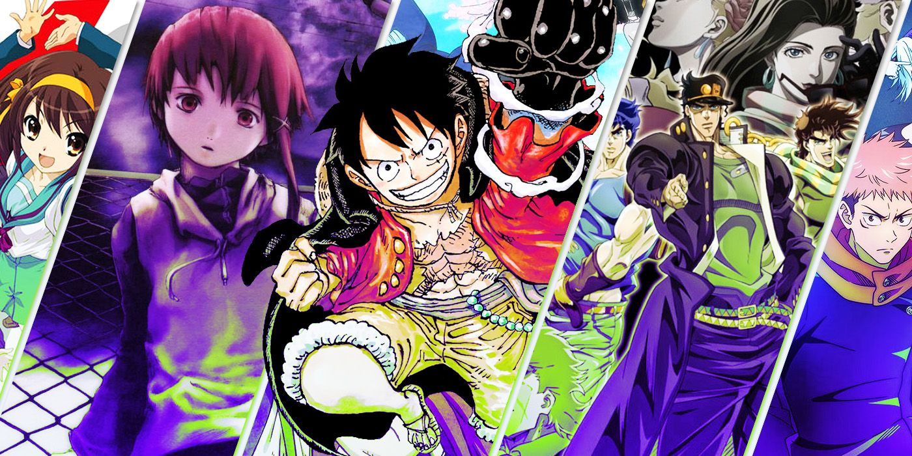
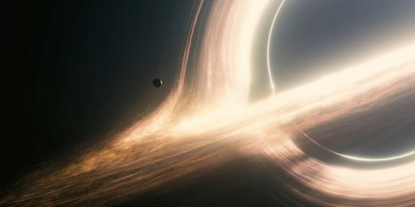

As a medium rich with complicated plots and underlying mysteries, anime generates fan theories like no other community. From logical, in-depth speculations that take into account hints provided within the show to hilarious, unhinged guesses that are fun to discover despite their improbability, the theorists of the anime fandom never seize to impress with their takes. Frankly, coming up with theories is one of the most rewarding and engaging ways fans can participate in the community.
BEST THEORIES FOR ANIME WITH SHARED UNIVERSES (APPARENTLY)
However, not every anime is equally suitable for wild theorizing. Some series, like straightforward rom-coms or unassuming slice-of-life flicks, simply don't provide enough material for speculation. Those fond of exploring anime's secrets and potential mysteries flock to shows that purposefully plant seeds of intrigue into their narratives and never shy away from dramatic plot twists. Eventually, such series become famous for their plentiful fan theories that, at times, make a surprising amount of sense.
10 The Melancholy Of Haruhi Suzumiya
The source of, arguably, the most popular fan theory in anime, The Melancholy of Haruhi Suzumiya, is a slice-of-life classic with an unexpected twist - its titular protagonist is, in fact, an omnipotent being unaware of her own power. While the “Haruhi is God” theory is all but confirmed in the show's text, it's not the only peculiar hypothesis the show's fans have come up with.
Some argue that the God is not Haruhi but the stoic narrator Kyon or that Kyon can actually give godlike powers to any girl he fancies. More sinister theories claim that Haruhi is just an ordinary girl, and Kyon complies with her wild delusions out of pity.
9 My Hero Academia
Similarly to every popular shonen with a lot of moving parts, My Hero Academia has plenty of compelling fan theories. The show’s theorist community is most famous for predicting a huge plot twist years before it was confirmed: the identity of the fire-wielding villain Dabi as Toya Todoroki, Endeavor’s lost son.
However, many more MHA theories remain unconfirmed, most of which are far too outrageous to ever become canon. But it doesn’t stop fans from speculating that All For One is Deku’s father, Hawks and Dabi were childhood friends, and Quirkless people actually don’t exist.
8 JoJo’s Bizarre Adventure
A show as wild and unpredictable as JoJo’s Bizarre Adventure naturally inspires fans to come up with equally creative speculations. Notoriously, JJBA has tons of plot inconsistencies, so fans take it upon themselves to fix them through theories.
In the world of JJBA, nothing is impossible, which makes theories like Mikitaka Hazekura being an actual alien, Kars having a Stand in Part 2, and Star Platinum being an incarnation of Jonathan. However, most JJBA theories are impossible to prove or debunk due to the series’ separation into parts. Once a part is over, it’s safe to assume that all of its mysteries will remain unsolved.
MOST OVERPOWERED ANIME CHARACTERS, RANKED
7 Jujutsu Kaisen
In the entirety of the new-gen shonen lineup, Jujutsu Kaisen is the boldest when it comes to unpredictable plot twists. Unlike other hubs of speculation in anime, JJK theorists are less concerned with the show’s lore, which is quite straightforward by shonen standards, and more interested in hypothesizing about the title’s characters. JJK is no stranger to killing off heroes.
So, fans eagerly theorize about the unclear fates of certain characters, predicting when and how they might come back. A similar allure of mystery surrounds the motivations and backgrounds of countless characters, leading to compelling theories about Kenjaku’s master plan, Sukuna’s past, and the lost siblings of Satoru Gojo.
6 Link Click
Link Click is a Chinese donghua series that initially grabbed viewers with its unorthodox approach to time travel, emotional episodic storytelling, and vibrant character cast. Fast-paced and mostly unconcerned with establishing an underlying plot at the beginning, Link Click raised many questions for curious theorists, mostly revolving around where Cheng Xiaoshi and Lu Guang’s powers came from.
Season 2 upped the mystery element by introducing other ability users of equally unknown origins and ending on a cliffhanger that confirmed Lu Guang as stuck in a time loop created to save Cheng Xiaoshi’s life. Now, fans have nothing to do but desperately theorize about the series’ future in wait for the next season, as the show has no source material to confirm their speculations.
5 Serial Experiments Lain
An older series famous for its ambiguous nature, Serial Experiments Lain is an atypical example of theorizing in the community. Instead of leading fans to argue about lore and character secrets, this avant-garde title poses timeless existential questions and leaves viewers to come up with answers on their own.
As a result, the show influenced some outstandingly introspective speculations. While fans will never know for sure if Lain is God, if the Wired is an allusion to the internet, and which of the heroine’s identities is the real Lain, the show makes its themes limitlessly engaging to speculate about.
4 Attack On Titan
In light of Attack on Titan’s approaching conclusion in the anime, even manga readers who’ve been in the know about the series finale for a while are reminiscing about AoT’s wild history of fan theories. Before the big reveal of season 3, which finally unraveled the secrets of humanity beyond the Walls, fans spent years theorizing about the contents of Eren’s basement, the origins of Titans, and the enigmatic connection between them and people.
While most speculations, such as Eren consuming all Titan Shifters or traveling back in time, were eventually debunked, a surprising number of fan theories turned out true. The time loop theory, Grisha Yeager's past outside the Walls, and, ultimately, all Titans being humans were all things fans predicted years before the show confirmed them.
CHAINSAW MAN FAN THEORIES THAT ACTUALLY MAKE SENSE
3 Chainsaw Man
Chainsaw Man earned a reputation for being weird, wild, and fond of the unexpected, which makes the series rich with content fan theorists adore. While anime-only fans speculate about what awaits Denji in the new season, manga readers, who are already painfully familiar with Tatsuki Fujimoto’s disregard for expectations, predict the story’s direction through incredibly complex theories.
Mystery is ever-present in CSM, so fans perpetually try to crack such secrets as the identities of the Death Devil and the Fake Chainsaw Man. In the show’s spirit, CSM fans also love to come up with some pretty unorthodox speculations, theorizing that Yoru and Asa were the same person all along or that Pochita was never the Chainsaw Devil but an unknown primal fear instead.
2 Bungou Stray Dogs
As one of the most active fandoms in the seinen genre, the Bungou Stray Dogs community adores coming up with fan theories. Thanks to the series’ thematic complexity and connection to the real lives of the novelists its characters are based on, BSD fans have tons of canonical information to work into their theories.
Some of their beloved hypotheses pose a real chance to be true, such as Tanizaki’s sister Naomi being an illusion he created with his ability, Dazai being a product of the Book, or all abilities originating from the Book. What sets the BSD fans apart is their dedication to thorough research and analysis when crafting their theories, making them incredibly convincing.
1 One Piece
The ultimate king of long-term storytelling in anime, One Piece crafted a perfect universe for eager theorists. Even outside the show’s biggest mystery—the nature of the legendary treasure One Piece—there is an ocean of undiscovered secrets and plot threads prime for speculation. Admittedly, One Piece theories can get rather silly, such as a popular hypothesis that Crocodile is actually Luffy’s biological mother.
However, the show is also responsible for some of the best speculations in anime fandom. The fans accurately predicted Sanji’s royal origins, so it’s not hard to believe they might be right about All Blue appearing when the Red Line is destroyed, Raftel being the Ancient Kingdom, and Blackbeard being three people in one body.

State Bank of India

Gautham Sajith

Robert Keith
